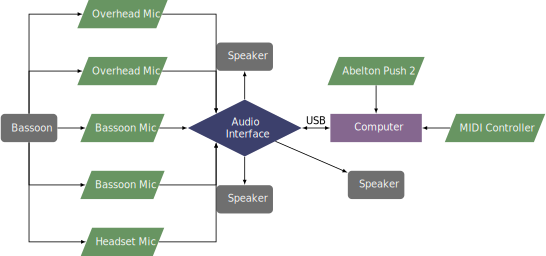

This piece was written in 2020 for Antti Salovaara, and the electronics were created by Erkka Lempiäinen. The composer can be contacted at his website.
This piece uses five microphones, three loudspeakers, and a wall to hide the performer. The performer must stand for this performance as they must emerge from behind the wall and go back at different times in the piece. Two microphones are used for close micing the bassoon, one is a headset mic to capture breathing sounds, and two more are overhead mics to capture the sound of the room. An audio interface with at least five inputs is necessary for all of the microphones.
A setup diagram for the piece is found below. 
The electronics are run using Ableton Live, using Max for Live to create the effects. The electronics are designed to be run by a separate performer using the Ableton Push 2. The bassoonist also controls parts of the patch with a MIDI controller. A screenshot of the Ableton Live session is shown in the screenshot below.
This piece is very difficult, featuring extensive use of extended techniques, advanced rhythms, all while having to change positions while performing. The electronic setup is also daunting. Overall, this piece is best left to performers accustomed to interactive electroacoustic performance.
This piece is in the avant-garde style, using multiphonics, microtones, ghosted notes, and tongue flaps. This piece would be difficult for audiences unaccustomed to this style of music, despite the novelty of the stage setup.
©2024 by Benjamin Bradshaw
Logo ©2024 by Hannah Bradshaw